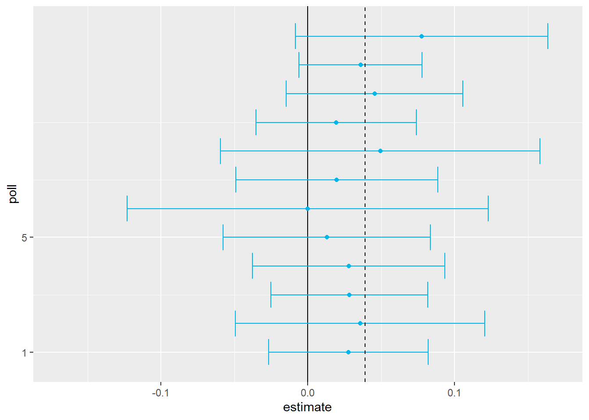
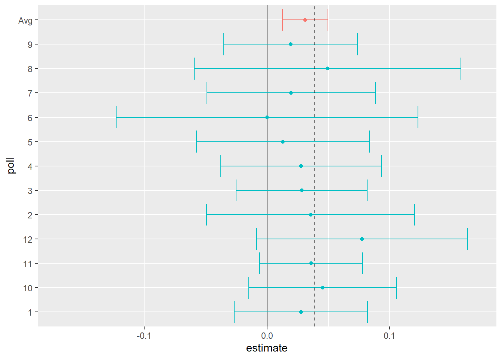
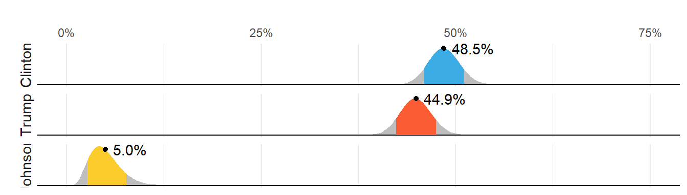
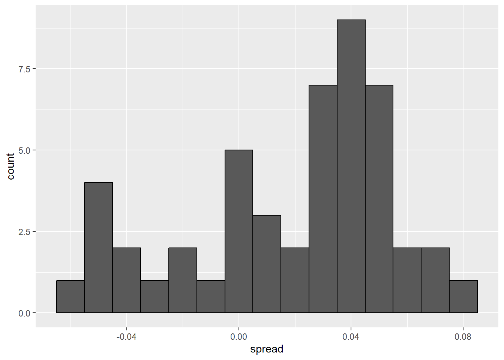
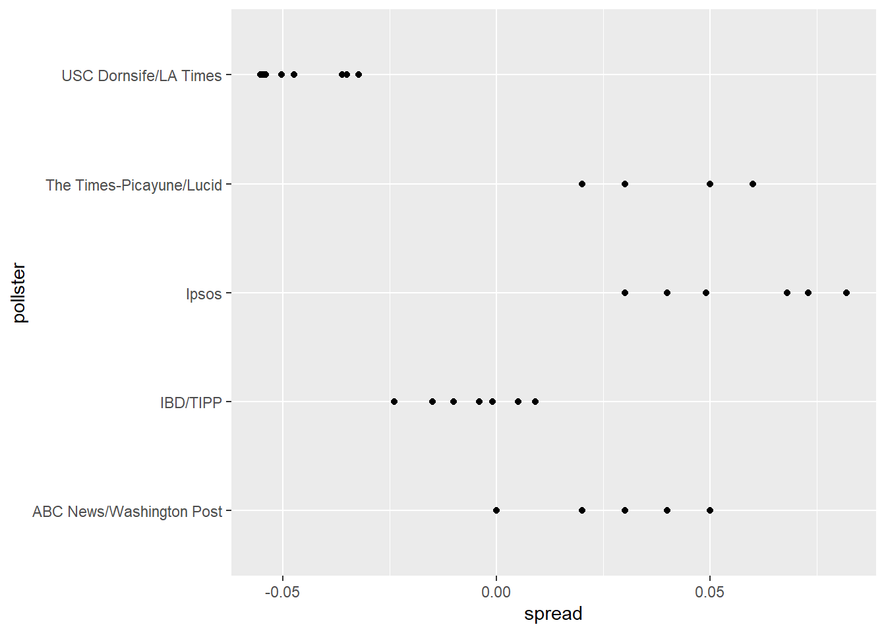
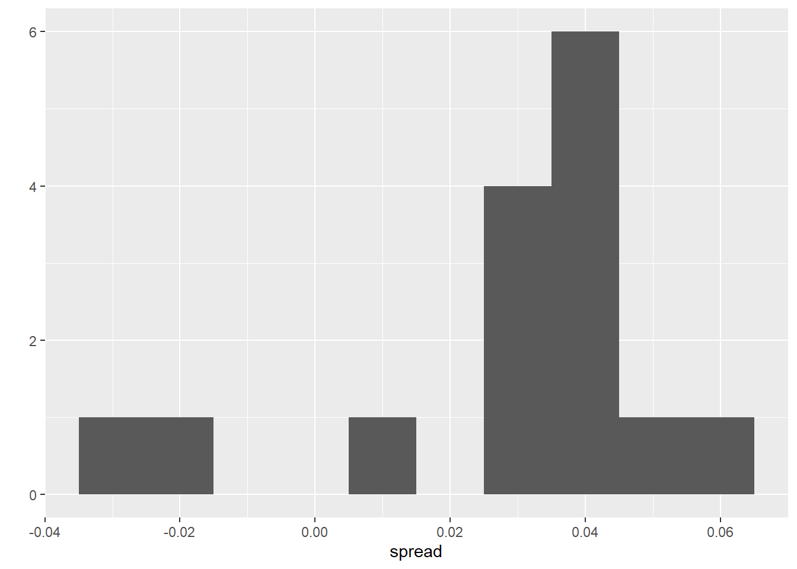

library(tidyverse)
library(dslabs)
d <- 0.039 # true spread
Ns <- c(1298, 533, 1342, 897, 774, 254, 812, 324, 1291, 1056, 2172, 516)
p <- (d + 1) / 2 # true pr(clinton vote)
polls <- map_df(Ns, function(N) {
x <- sample(c(0,1), size=N, replace=TRUE, prob=c(1-p, p))
x_hat <- mean(x)
se_hat <- sqrt(x_hat * (1 - x_hat) / N)
list(estimate = 2 * x_hat - 1,
low = 2*(x_hat - 1.96*se_hat) - 1,
high = 2*(x_hat + 1.96*se_hat) - 1,
sample_size = N)
}) %>% mutate(poll = seq_along(Ns))5: Statistical Models and Uncertainty
Due Date
This assignment is due on Monday, February 17th
All assignments are due on D2L by 11:59pm on the due date. Late work is not accepted. You do not need to submit your .rmd file - just the properly-knitted PDF. All assignments must be properly rendered to PDF using Latex. Make sure you start your assignment sufficiently early such that you have time to address rendering issues. Come to office hours or use the course Slack if you have issues. Using an Rstudio instance on posit.cloud is always a feasible alternative.
Note:
For this exercise you will need to ensure that you’ve carefully read this week’s content and example. We will build on both. The exercises (which you will turn in as this week’s lab) are at the bottom. Note that this week’s lab is much more theoretical than any other week in this class. This is to ensure that you have the foundations necessary to build rich statistical models and apply them to real-world data.
Statistical models
“All models are wrong, but some are useful.” –George E. P. Box
The day before the 2008 presidential election, Nate Silver’s FiveThirtyEight stated that “Barack Obama appears poised for a decisive electoral victory”. They went further and predicted that Obama would win the election with 349 electoral votes to 189, and the popular vote by a margin of 6.1%. FiveThirtyEight also attached a probabilistic statement to their prediction claiming that Obama had a 91% chance of winning the election. The predictions were quite accurate since, in the final results, Obama won the electoral college 365 to 173 and the popular vote by a 7.2% difference. Their performance in the 2008 election brought FiveThirtyEight to the attention of political pundits and TV personalities. Four years later, the week before the 2012 presidential election, FiveThirtyEight’s Nate Silver was giving Obama a 90% chance of winning despite many of the experts thinking the final results would be closer. Political commentator Joe Scarborough said during his show1:
Anybody that thinks that this race is anything but a toss-up right now is such an ideologue … they’re jokes.
To which Nate Silver responded via Twitter:
If you think it’s a toss-up, let’s bet. If Obama wins, you donate $1,000 to the American Red Cross. If Romney wins, I do. Deal?
In 2016, Silver was not as certain and gave Hillary Clinton only a 71% of winning. In contrast, most other forecasters were almost certain she would win. She lost. But 71% is still more than 50%, so was Mr. Silver wrong? And what does probability mean in this context anyway? Are dice being tossed somewhere?
In this lab we will demonstrate how poll aggregators, such as FiveThirtyEight, collected and combined data reported by different experts to produce improved predictions. We will introduce ideas behind the statistical models, also known as probability models, that were used by poll aggregators to improve election forecasts beyond the power of individual polls. First, we’ll motivate the models, building on the statistical inference concepts we learned in this week’s content and example. We start with relatively simple models, realizing that the actual data science exercise of forecasting elections involves rather complex ones. We will introduce such modeks towards the end of this section of the course.
Poll aggregators
A few weeks before the 2012 election Nate Silver was giving Obama a 90% chance of winning. How was Mr. Silver so confident? We will use a Monte Carlo simulation to illustrate the insight Mr. Silver had and others missed. To do this, we generate results for 12 polls taken the week before the election. We mimic sample sizes from actual polls and construct and report 95% confidence intervals for each of the 12 polls. We save the results from this simulation in a data frame and add a poll ID column.
Here is a visualization showing the intervals the pollsters would have reported for the difference between Obama and Romney:

Not surprisingly, all 12 polls report confidence intervals that include the election night result (dashed line). However, all 12 polls also include 0 (solid black line) as well. Therefore, if asked individually for a prediction, the pollsters would have to say: it’s a toss-up. Below we describe a key insight they are missing.
Poll aggregators, such as Nate Silver, realized that by combining the results of different polls you could greatly improve precision. By doing this, we are effectively conducting a poll with a huge sample size. We can therefore report a smaller 95% confidence interval and a more precise prediction.
Although as aggregators we do not have access to the raw poll data, we can use mathematics to reconstruct what we would have obtained had we made one large poll with:
sum(polls$sample_size)[1] 11269participants. Basically, we construct an estimate of the spread, let’s call it \(d\), with a weighted average in the following way:
d_hat <- polls %>%
summarize(avg = sum(estimate*sample_size) / sum(sample_size)) %>%
pull(avg)Once we have an estimate of \(d\), we can construct an estimate for the proportion voting for Obama, which we can then use to estimate the standard error. Once we do this, we see that our margin of error is 0.0184545.
Thus, we can predict that the spread will be 3.1 plus or minus 1.8, which not only includes the actual result we eventually observed on election night, but is quite far from including 0. Once we combine the 12 polls, we become quite certain that Obama will win the popular vote.

Of course, this was just a simulation to illustrate the idea. The actual data science exercise of forecasting elections is much more complicated and it involves modeling. Below we explain how pollsters fit multilevel models to the data and use this to forecast election results. In the 2008 and 2012 US presidential elections, Nate Silver used this approach to make an almost perfect prediction and silence the pundits.
Since the 2008 elections, other organizations have started their own election forecasting group that, like Nate Silver’s, aggregates polling data and uses statistical models to make predictions. In 2016, forecasters underestimated Trump’s chances of winning greatly. The day before the election the New York Times reported2 the following probabilities for Hillary Clinton winning the presidency:
| NYT | 538 | HuffPost | PW | PEC | DK | Cook | Roth | |
|---|---|---|---|---|---|---|---|---|
| Win Prob | 85% | 71% | 98% | 89% | >99% | 92% | Lean Dem | Lean Dem |
For example, the Princeton Election Consortium (PEC) gave Trump less than 1% chance of winning, while the Huffington Post gave him a 2% chance. In contrast, FiveThirtyEight had Trump’s probability of winning at 29%, higher than tossing two coins and getting two heads. In fact, four days before the election FiveThirtyEight published an article titled Trump Is Just A Normal Polling Error Behind Clinton3. By understanding statistical models and how these forecasters use them, we will start to understand how this happened.
Although not nearly as interesting as predicting the electoral college, for illustrative purposes we will start by looking at predictions for the popular vote. FiveThirtyEight predicted a 3.6% advantage for Clinton4, included the actual result of 2.1% (48.2% to 46.1%) in their interval, and was much more confident about Clinton winning the election, giving her an 81.4% chance. Their prediction was summarized with a chart like this:

The colored areas represent values with an 80% chance of including the actual result, according to the FiveThirtyEight model.
We introduce actual data from the 2016 US presidential election to show how models are motivated and built to produce these predictions. To understand the “81.4% chance” statement we need to describe Bayesian statistics, which we don’t cover in this course.
Poll data
We use public polling data organized by FiveThirtyEight for the 2016 presidential election. The data is included as part of the dslabs package:
data(polls_us_election_2016)The table includes results for national polls, as well as state polls, taken during the year prior to the election. For this first example, we will filter the data to include national polls conducted during the week before the election. We also remove polls that FiveThirtyEight has determined not to be reliable and graded with a “B” or less. Some polls have not been graded and we include those:
polls <- polls_us_election_2016 %>%
filter(state == "U.S." & enddate >= "2016-10-31" &
(grade %in% c("A+","A","A-","B+") | is.na(grade)))We add a spread estimate:
polls <- polls %>%
mutate(spread = rawpoll_clinton/100 - rawpoll_trump/100)For this example, we will assume that there are only two parties and call \(p\) the proportion voting for Clinton and \(1-p\) the proportion voting for Trump. We are interested in the spread \(2p-1\). Let’s call the spread \(d\) (for difference).
We have 49 estimates of the spread. The theory we learned tells us that these estimates are a random variable with a probability distribution that is approximately normal. The expected value is the election night spread \(d\) and the standard error is \(2\sqrt{p (1 - p) / N}\). Assuming the urn model we described earlier is a good one, we can use this information to construct a confidence interval based on the aggregated data. The estimated spread is:
d_hat <- polls %>%
summarize(d_hat = sum(spread * samplesize) / sum(samplesize)) %>%
pull(d_hat)and the standard error is:
p_hat <- (d_hat+1)/2
moe <- 1.96 * 2 * sqrt(p_hat * (1 - p_hat) / sum(polls$samplesize))
moe[1] 0.006623178So we report a spread of 1.43% with a margin of error of 0.66%. On election night, we discover that the actual percentage was 2.1%, which is outside a 95% confidence interval. What happened?
A histogram of the reported spreads shows a problem:
polls %>%
ggplot(aes(spread)) +
geom_histogram(color="black", binwidth = .01)
The data does not appear to be normally distributed and the standard error appears to be larger than 0.0066232. The theory is not quite working here.
Pollster bias
Notice that various pollsters are involved and some are taking several polls a week:
polls %>% group_by(pollster) %>% summarize(n())# A tibble: 15 × 2
pollster `n()`
<fct> <int>
1 ABC News/Washington Post 7
2 Angus Reid Global 1
3 CBS News/New York Times 2
4 Fox News/Anderson Robbins Research/Shaw & Company Research 2
5 IBD/TIPP 8
6 Insights West 1
7 Ipsos 6
8 Marist College 1
9 Monmouth University 1
10 Morning Consult 1
11 NBC News/Wall Street Journal 1
12 RKM Research and Communications, Inc. 1
13 Selzer & Company 1
14 The Times-Picayune/Lucid 8
15 USC Dornsife/LA Times 8Let’s visualize the data for the pollsters that are regularly polling:

This plot reveals an unexpected result. First, consider that the standard error predicted by theory for each poll:
polls %>% group_by(pollster) %>%
filter(n() >= 6) %>%
summarize(se = 2 * sqrt(p_hat * (1-p_hat) / median(samplesize)))# A tibble: 5 × 2
pollster se
<fct> <dbl>
1 ABC News/Washington Post 0.0265
2 IBD/TIPP 0.0333
3 Ipsos 0.0225
4 The Times-Picayune/Lucid 0.0196
5 USC Dornsife/LA Times 0.0183is between 0.018 and 0.033, which agrees with the within poll variation we see. However, there appears to be differences across the polls. Note, for example, how the USC Dornsife/LA Times pollster is predicting a 4% win for Trump, while Ipsos is predicting a win larger than 5% for Clinton. The theory we learned says nothing about different pollsters producing polls with different expected values. All the polls should have the same expected value. FiveThirtyEight refers to these differences as “house effects”. We also call them pollster bias.
In the following section, rather than use the urn model theory, we are instead going to develop a data-driven model.
Data-driven models
For each pollster, let’s collect their last reported result before the election:
one_poll_per_pollster <- polls %>% group_by(pollster) %>%
filter(enddate == max(enddate)) %>%
ungroup()Here is a histogram of the data for these 15 pollsters:
ggplot(one_poll_per_pollster, aes(x = spread)) +
geom_histogram(binwidth=.01)
In the previous section, we saw that using the urn model theory to combine these results might not be appropriate due to the pollster effect. Instead, we will model this spread data directly.
The new model can also be thought of as an urn model, although the connection is not as direct. Rather than 0s (Republicans) and 1s (Democrats), our urn now contains poll results from all possible pollsters. We assume that the expected value of our urn is the actual spread \(d=2p-1\).
Because instead of 0s and 1s, our urn contains continuous numbers between -1 and 1, the standard deviation of the urn is no longer \(\sqrt{p(1-p)}\). Rather than voter sampling variability, the standard error now includes the pollster-to-pollster variability. Our new urn also includes the sampling variability from the polling. Regardless, this standard deviation is now an unknown parameter. In statistics textbooks, the Greek symbol \(\sigma\) is used to represent this parameter.
In summary, we have two unknown parameters: the expected value \(d\) and the standard deviation \(\sigma\).
Our task is to estimate \(d\). Because we model the observed values \(X_1,\dots X_N\) as a random sample from the urn, the CLT might still work in this situation because it is an average of independent random variables. For a large enough sample size \(N\), the probability distribution of the sample average \(\bar{X}\) is approximately normal with expected value \(\mu\) and standard error \(\sigma/\sqrt{N}\). If we are willing to consider \(N=15\) large enough, we can use this to construct confidence intervals.
A problem is that we don’t know \(\sigma\). But theory tells us that we can estimate the urn model \(\sigma\) with the sample standard deviation defined as \(s = \sqrt{ \sum_{i=1}^N (X_i - \bar{X})^2 / (N-1)}\).
Unlike for the population standard deviation definition, we now divide by \(N-1\). This makes \(s\) a better estimate of \(\sigma\). There is a mathematical explanation for this, which is explained in most statistics textbooks, but we don’t cover it here.
The sd function in R computes the sample standard deviation:
sd(one_poll_per_pollster$spread)[1] 0.02419369We are now ready to form a new confidence interval based on our new data-driven model:
results <- one_poll_per_pollster %>%
summarize(avg = mean(spread),
se = sd(spread) / sqrt(length(spread))) %>%
mutate(start = avg - 1.96 * se,
end = avg + 1.96 * se)
round(results * 100, 1) avg se start end
1 2.9 0.6 1.7 4.1Our confidence interval is wider now since it incorporates the pollster variability. It does include the election night result of 2.1%. Also, note that it was small enough not to include 0, which means we were confident Clinton would win the popular vote.
EXERCISES
Note that using dollar signs $ $ to enclose some text is how you make the fancy math you see below. If you installed tinytex or some other Latex distribution in order to render your PDFs, you should be equipped to insert mathematics directly into your .Rmd file. It only works in the text – inside the code chunks, the dollar sign is still the accessor.
In this section, we talked about pollster bias. We used visualization to motivate the presence of such bias. Here we will give it a more rigorous treatment. We will consider two pollsters that conducted daily polls. We will look at national polls for the month before the election.
data(polls_us_election_2016)
polls <- polls_us_election_2016 %>%
filter(pollster %in% c("Rasmussen Reports/Pulse Opinion Research",
"The Times-Picayune/Lucid") &
enddate >= "2016-10-15" &
state == "U.S.") %>%
mutate(spread = rawpoll_clinton/100 - rawpoll_trump/100)We want to answer the question: is there a poll bias?. That is, does one of these pollsters have a “thumb on the scale” (or methodology that makes them consistently different) relative to the other.
First, make a plot showing the spreads for each poll. Visualizing our data first helps guide us!
The data does seem to suggest there is a difference. However, these data are subject to variability. Perhaps the differences we observe are due to chance.
The urn model theory says nothing about pollster effect. Under the urn model, both pollsters have the same expected value: the election day difference, that we call \(d\).
We will model the observed data \(Y_{i,j}\) in the following way:
\[ Y_{i,j} = d + b_i + \varepsilon_{i,j} \]
with \(i=1,2\) indexing the two pollsters, \(b_i\) the bias for pollster \(i\) and \(\varepsilon_{ij}\) poll to poll chance variability. We assume the \(\varepsilon\) are independent from each other, have expected value \(0\) and standard deviation \(\sigma_i\) regardless of \(j\).
Which of the following best represents our question about (relative) poll bias?
- Is \(\varepsilon_{i,j}\) = 0?
- How close are the \(Y_{i,j}\) to \(d\)?
- Is \(b_1 \neq b_2\)?
- Are \(b_1 = 0\) and \(b_2 = 0\) ?
- Suppose we define \(\bar{Y}_1\) as the average of poll results from the first pollster, \(Y_{1,1},\dots,Y_{1,N_1}\) with \(N_1\) the number of polls conducted by the first pollster:
polls %>%
filter(pollster=="Rasmussen Reports/Pulse Opinion Research") %>%
summarize(N_1 = n())What is the expected value of \(\bar{Y}_1\)? What is the sample mean \(\bar{y}_1\)?
What is the sample variance \(s^2_1\) of the sample \(Y_1\)? Using \(s^2_1\), what is your estimate of the standard error of the mean \(\bar{Y}_1\)?
Suppose we define \(\bar{Y}_2\) as the average of poll results from the second pollster, \(Y_{2,1},\dots,Y_{2,N_2}\) with \(N_2\) the number of polls conducted by the second pollster. What is the expected value \(\bar{Y}_2\), the sample mean \(\bar{y}_2\), the sample variance \(s^2_2\), and the standard error of the mean \(\bar{Y}_2\)?
What does the CLT tell us about the distribution of a new random variable that is defined as \(\bar{Y}_2 - \bar{Y}_1\)?
- Nothing, because this is not the average of a sample.
- Because the \(Y_{ij}\) are approximately normal, so are the averages.
- Noting that \(\bar{Y}_2\) and \(\bar{Y}_1\) are sample averages, if we assume \(N_2\) and \(N_1\) are large enough, each is approximately normal. The difference of normals is also normal.
- The data are not 0 or 1, so CLT does not apply.
- The new random variable defined as \(\bar{Y}_2 - \bar{Y}_1\) has an expected value of \(b_2 - b_1\). To see this, take the equation from problem 2 defined for each pollster, write out the difference, and take expectations. \(b_2 = b_1\) is the pollster bias difference we want to learn about statistically. If our model holds, then this random variable has an approximately normal distribution and we know its standard error – by the rules of random variable variance, the standard error is the square root of the variance of the new random variable, and the variance of the new variable is the sum of the variances minus twice the covariance (which is zero by our assumptions). The standard error of our new random variable depends on (and can be calculated using) the standard errors of the \(Y\) above, which we already estimated in 3-5.
The statistic formed by dividing our estimate of \(b_2-b_1\) by its estimated standard error:
\[ \frac{\bar{y}_2 - \bar{y}_1}{\sqrt{\underbrace{s_2^2/N_2}_{\text{Std error of mean from 4, squared}} + \underbrace{s_1^2/N_1}_{\text{Std error of mean from 5, squared}}}} \]
is called the t-statistic. Now you should be able to do the calculations necessary to answer the question: is \(b_2 - b_1\) different from 0? You can use the t-statistic (via a t-test), or you can build a 95% confidence interval around your estimate and see if it includes 0.